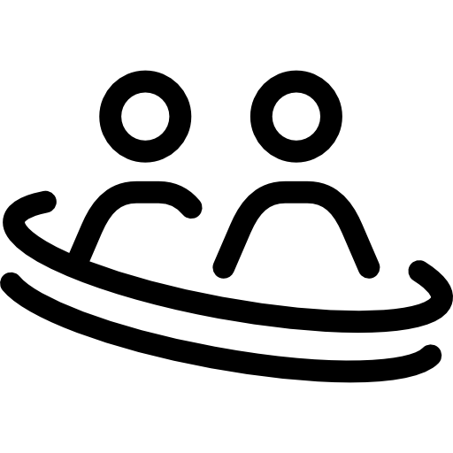

SIENTE TU BARRIO
Aspectos que nos diferencian

Formación gratuita e intuitiva
Reducción huella de carbono

Fomentar producto local y mejora de la economía española

Mejora de las relaciones sociales cercanas